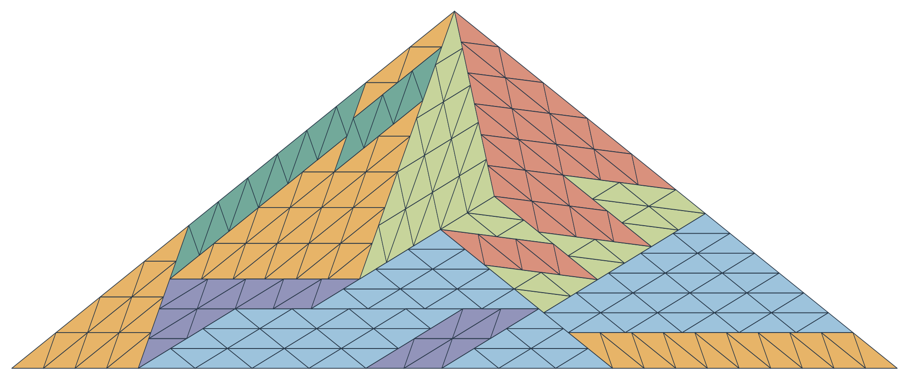

Erdős Problem 634
How many congruent triangles can tile a triangle?
For which positive integers N can a triangle be cut into exactly N congruent triangles? The outer triangle and the shape of the tile may vary. A tile may be turned over.
Open the triangle tilings repositoryA dissection into 280 triangles
The outer triangle has sides 90, 90 and 140. Each tile has sides 5, 6 and 9. Its area is 10√2, exactly one 280th of the outer area. The coordinate file specifies the placement of every tile so that coverage and edge contacts can be checked.

Constructions and research notes
The archive also asks what happens when the tile shape stays fixed while the outside triangle varies. It records the proposed classification in that setting, its proof and examples. The general problem allows the tile shape to vary as well.